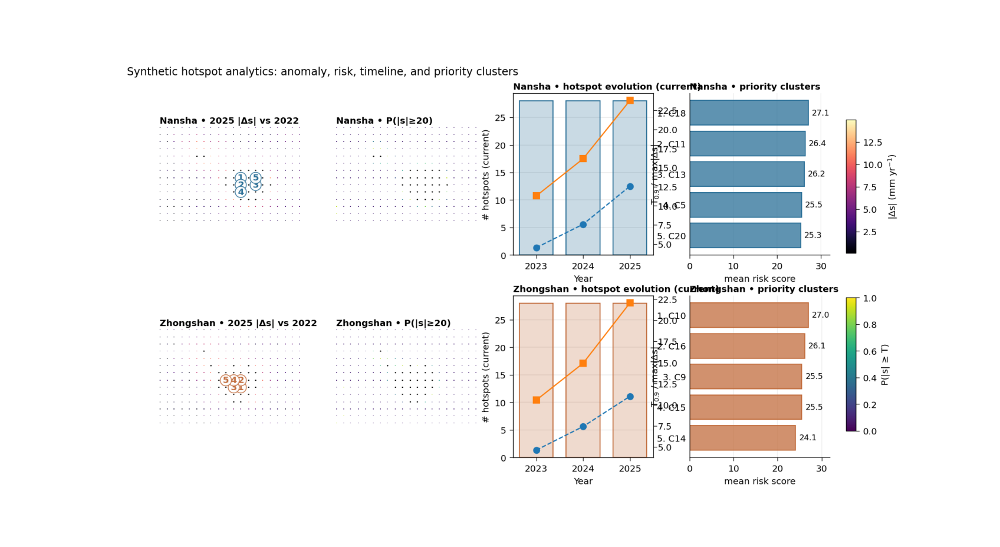

Note
Go to the end to download the full example code.
Hotspot analytics: turning future forecasts into decision-ready priority maps#
This example teaches you how to read the GeoPrior hotspot-analytics figure.
Many forecast figures answer:
where the model predicts large change,
or how uncertainty behaves.
This figure asks a more practical planning question:
Where are the most decision-relevant future hotspot areas, how persistent are they, and which clusters should be prioritized first?
That is why this figure is useful. It takes forecast outputs and turns them into a compact risk-and-priority summary.
What the figure shows#
The real plotting backend builds one row per city and four main panels per row:
hotspot anomaly map \(|\Delta s|\) relative to the base year,
exceedance-risk map \(P(|s| \ge T)\) from forecast quantiles,
hotspot timeline hotspot counts together with \(T_{0.9}\) and maximum anomaly,
priority clusters ranked hotspot clusters using either anomaly or risk.
The script can also add an optional persistence panel and an optional scenario A-vs-B comparison panel. Here we keep the first lesson focused on the core 2×4 design.
Why this matters#
A spatial forecast can look impressive but still be hard to act on.
Hotspot analytics makes the forecast easier to use by answering:
where are the strongest anomaly zones,
how likely are they to exceed a threshold,
do those zones persist across years,
and which clusters deserve first attention?
This gallery page builds a compact synthetic workflow so the lesson is fully executable during the docs build.
Imports#
We use the real hotspot table builder and the real plotting backend from the project script.
from __future__ import annotations
import tempfile
from pathlib import Path
import matplotlib.image as mpimg
import matplotlib.pyplot as plt
import numpy as np
import pandas as pd
from geoprior._scripts.plot_hotspot_analytics import (
build_hotspot_tables,
plot_hotspot_analytics,
)
Step 1 - Build compact synthetic city tables#
The real script needs, for each city:
one evaluation table with sample_idx, coord_t, coord_x, coord_y, subsidence_actual, subsidence_q50
one future table with sample_idx, coord_t, coord_x, coord_y, subsidence_q10, subsidence_q50, subsidence_q90
For the lesson, we create two synthetic cities with:
a baseline hotspot zone,
a future intensification pattern,
and slightly different city behavior.
rng = np.random.default_rng(9)
def make_city_tables(
*,
city: str,
x0: float,
y0: float,
amp: float,
shift_x: float,
shift_y: float,
seed: int,
) -> tuple[pd.DataFrame, pd.DataFrame]:
rr = np.random.default_rng(seed)
nx = 20
ny = 14
xs = np.linspace(x0, x0 + 12000.0, nx)
ys = np.linspace(y0, y0 + 8000.0, ny)
X, Y = np.meshgrid(xs, ys)
xn = (X - X.min()) / (X.max() - X.min())
yn = (Y - Y.min()) / (Y.max() - Y.min())
# Main anomaly basin + one shoulder.
bowl1 = np.exp(
-(
((xn - (0.62 + shift_x)) ** 2) / 0.030
+ ((yn - (0.38 + shift_y)) ** 2) / 0.050
)
)
bowl2 = np.exp(
-(
((xn - 0.30) ** 2) / 0.020
+ ((yn - 0.72) ** 2) / 0.035
)
)
signal = (
amp * bowl1
+ 0.45 * amp * bowl2
+ 5.0 * xn
+ 2.5 * yn
)
sample_idx = np.arange(X.size, dtype=int)
# Evaluation year for the base comparison.
eval_year = 2022
actual_eval = (
0.70 * signal.ravel()
+ rr.normal(0.0, 1.0, size=signal.size)
)
pred_eval = (
0.68 * signal.ravel()
+ 0.4
+ rr.normal(0.0, 0.8, size=signal.size)
)
eval_df = pd.DataFrame(
{
"sample_idx": sample_idx,
"coord_t": eval_year,
"coord_x": X.ravel(),
"coord_y": Y.ravel(),
"subsidence_actual": actual_eval,
"subsidence_q50": pred_eval,
}
)
# Future forecasts for three years.
fut_rows: list[pd.DataFrame] = []
scales = {
2023: 0.92,
2024: 1.10,
2025: 1.34,
}
for yy, mult in scales.items():
q50 = (
mult * signal.ravel()
+ 0.5 * np.sin(2.0 * np.pi * xn).ravel()
+ rr.normal(0.0, 0.9, size=signal.size)
)
spread = (
2.0
+ 0.06 * q50
+ np.maximum(0.0, q50 - np.median(q50)) * 0.03
)
fut_rows.append(
pd.DataFrame(
{
"sample_idx": sample_idx,
"coord_t": yy,
"coord_x": X.ravel(),
"coord_y": Y.ravel(),
"subsidence_q10": q50 - spread,
"subsidence_q50": q50,
"subsidence_q90": q50 + spread,
}
)
)
fut_df = pd.concat(fut_rows, ignore_index=True)
return eval_df, fut_df
ns_eval, ns_future = make_city_tables(
city="Nansha",
x0=0.0,
y0=0.0,
amp=36.0,
shift_x=0.00,
shift_y=0.00,
seed=11,
)
zh_eval, zh_future = make_city_tables(
city="Zhongshan",
x0=18000.0,
y0=5000.0,
amp=31.0,
shift_x=-0.06,
shift_y=0.05,
seed=27,
)
print("Rows")
print(f" Nansha eval: {len(ns_eval)}")
print(f" Nansha future: {len(ns_future)}")
print(f" Zhongshan eval: {len(zh_eval)}")
print(f" Zhongshan future: {len(zh_future)}")
Rows
Nansha eval: 280
Nansha future: 840
Zhongshan eval: 280
Zhongshan future: 840
Step 2 - Add a simple exposure layer#
The real script can weight hotspot risk by an exposure table
keyed on sample_idx. This is useful because the same
physical anomaly may matter more in places with greater assets,
population, or infrastructure.
Here we create a simple synthetic exposure table for each city.
expo_ns = pd.DataFrame(
{
"sample_idx": np.arange(ns_eval["sample_idx"].nunique()),
"exposure": np.linspace(
0.9,
1.8,
ns_eval["sample_idx"].nunique(),
),
}
)
expo_zh = pd.DataFrame(
{
"sample_idx": np.arange(zh_eval["sample_idx"].nunique()),
"exposure": np.linspace(
1.0,
1.6,
zh_eval["sample_idx"].nunique(),
)[::-1],
}
)
Step 3 - Build the real hotspot tables#
This is the key data-preparation step.
The script converts the forecast quantiles into:
annual anomaly magnitude
delta_abs,exceedance probability
p_exceed,exposure-weighted
risk_score,per-year threshold
T_q,hotspot flags,
and ranked cluster summaries.
We keep the lesson on the default “percentile” hotspot rule.
years = [2023, 2024, 2025]
base_year = 2022
city_ns = build_hotspot_tables(
city="Nansha",
color="#2a6f97",
eval_df=ns_eval,
fut_df=ns_future,
years=years,
base_year=base_year,
subsidence_kind="increment",
hotspot_q=0.90,
risk_threshold=20.0,
use_abs_risk=True,
hotspot_rule="percentile",
hotspot_abs=None,
risk_min=None,
exposure_df=expo_ns,
exposure_col="exposure",
exposure_default=1.0,
)
city_zh = build_hotspot_tables(
city="Zhongshan",
color="#c26d3d",
eval_df=zh_eval,
fut_df=zh_future,
years=years,
base_year=base_year,
subsidence_kind="increment",
hotspot_q=0.90,
risk_threshold=20.0,
use_abs_risk=True,
hotspot_rule="percentile",
hotspot_abs=None,
risk_min=None,
exposure_df=expo_zh,
exposure_col="exposure",
exposure_default=1.0,
)
print("")
print("Year summaries")
print(city_ns.df_years.to_string(index=False))
print("")
print(city_zh.df_years.to_string(index=False))
Year summaries
city year T_q n_hotspots n_hotspots_ever n_hotspots_new n_hotspots_pct n_hotspots_abs n_hotspots_risk delta_mean delta_max p_mean risk_sum
Nansha 2023 4.510224 28 28 28 28 -1 -1 2.145937 11.286709 0.174852 222.116272
Nansha 2024 7.582256 28 36 8 28 -1 -1 3.585133 16.151670 0.193940 470.604481
Nansha 2025 12.558343 28 38 2 28 -1 -1 5.588311 23.778802 0.233140 893.569208
city year T_q n_hotspots n_hotspots_ever n_hotspots_new n_hotspots_pct n_hotspots_abs n_hotspots_risk delta_mean delta_max p_mean risk_sum
Zhongshan 2023 4.633184 28 28 28 28 -1 -1 2.095478 10.544812 0.168913 210.408668
Zhongshan 2024 7.422571 28 35 7 28 -1 -1 3.399951 14.901438 0.186512 424.515044
Zhongshan 2025 10.994437 28 36 1 28 -1 -1 5.317009 22.042327 0.225046 796.416301
Step 4 - Render the real hotspot figure#
We now call the actual plotting backend.
Important note: for this script we only pass arguments that the real function actually supports:
show_legend
show_title
show_panel_titles
and not the panel-label or generic text flags used by some other figures.
tmp_dir = Path(
tempfile.mkdtemp(prefix="gp_sg_hotspot_")
)
out_base = tmp_dir / "hotspot_analytics_gallery"
out_points = tmp_dir / "hotspot_points.csv"
out_years = tmp_dir / "hotspot_years.csv"
out_clusters = tmp_dir / "hotspot_clusters.csv"
plot_hotspot_analytics(
cities=[city_ns, city_zh],
focus_year=2025,
grid_res=160,
clip=98.0,
cmap_metric="magma",
cmap_prob="viridis",
persistence_mode="fraction",
cluster_top=5,
risk_threshold=20.0,
show_legend=True,
show_title=True,
show_panel_titles=True,
title=(
"Synthetic hotspot analytics: anomaly, risk, "
"timeline, and priority clusters"
),
out=str(out_base),
out_points=str(out_points),
out_years=str(out_years),
out_clusters=str(out_clusters),
timeline_mode="current",
timeline_overlay_current=True,
dpi=160,
font=9,
cluster_rank="risk",
add_persistence=False,
add_compare=False,
compare_metric="risk",
hotspot_rule="percentile",
hotspot_abs=None,
risk_min=None,
ns_future_b=None,
zh_future_b=None,
gdf=None,
)
[OK] wrote C:\Users\Daniel\AppData\Local\Temp\gp_sg_hotspot_nru9k161\hotspot_analytics_gallery (eps,pdf,png,svg)
[OK] wrote C:\Users\Daniel\AppData\Local\Temp\gp_sg_hotspot_nru9k161\hotspot_points.csv
[OK] wrote C:\Users\Daniel\AppData\Local\Temp\gp_sg_hotspot_nru9k161\hotspot_years.csv
[OK] wrote C:\Users\Daniel\AppData\Local\Temp\gp_sg_hotspot_nru9k161\hotspot_clusters.csv
Step 5 - Show the PNG produced by the backend#
The plotting backend writes the figure to disk. For the gallery lesson, we surface the PNG directly on the page.
img = mpimg.imread(str(out_base) + ".png")
fig, ax = plt.subplots(figsize=(10.6, 5.8))
ax.imshow(img)
ax.axis("off")

(np.float64(-0.5), np.float64(1727.5), np.float64(940.5), np.float64(-0.5))
Step 6 - Read the exported hotspot tables#
The real script exports three audit-friendly tables:
per-point hotspot values
per-year hotspot summaries
per-cluster ranked priorities
pts_df = pd.read_csv(out_points)
yrs_df = pd.read_csv(out_years)
clu_df = pd.read_csv(out_clusters)
print("")
print("Per-year summary")
print(yrs_df.to_string(index=False))
print("")
print("Top priority clusters")
print(
clu_df.sort_values(
["city", "priority_rank"]
).groupby("city").head(5).to_string(index=False)
)
Per-year summary
city year T_q n_hotspots n_hotspots_ever n_hotspots_new n_hotspots_pct n_hotspots_abs n_hotspots_risk delta_mean delta_max p_mean risk_sum
Nansha 2023 4.510224 28 28 28 28 -1 -1 2.145937 11.286709 0.174852 222.116272
Nansha 2024 7.582256 28 36 8 28 -1 -1 3.585133 16.151670 0.193940 470.604481
Nansha 2025 12.558343 28 38 2 28 -1 -1 5.588311 23.778802 0.233140 893.569208
Zhongshan 2023 4.633184 28 28 28 28 -1 -1 2.095478 10.544812 0.168913 210.408668
Zhongshan 2024 7.422571 28 35 7 28 -1 -1 3.399951 14.901438 0.186512 424.515044
Zhongshan 2025 10.994437 28 36 1 28 -1 -1 5.317009 22.042327 0.225046 796.416301
Top priority clusters
city year cluster_id n_cells metric_mean metric_max risk_mean risk_max centroid_x centroid_y priority_rank
Nansha 2025 18 1 22.790336 22.790336 27.127852 27.127852 6937.5 3675.0 1
Nansha 2025 11 1 23.325558 23.325558 26.410551 26.410551 6937.5 3075.0 2
Nansha 2025 13 1 23.011016 23.011016 26.188021 26.188021 8212.5 3075.0 3
Nansha 2025 5 1 23.778802 23.778802 25.543036 25.543036 6937.5 2475.0 4
Nansha 2025 20 1 21.186109 21.186109 25.341320 25.341320 8212.5 3675.0 5
Zhongshan 2025 10 1 22.042327 22.042327 27.005405 27.005405 24937.5 8075.0 1
Zhongshan 2025 16 1 22.032836 22.032836 26.140894 26.140894 24937.5 8675.0 2
Zhongshan 2025 9 1 20.790421 20.790421 25.511858 25.511858 24337.5 8075.0 3
Zhongshan 2025 15 1 21.457603 21.457603 25.499939 25.499939 24337.5 8675.0 4
Zhongshan 2025 14 1 20.224569 20.224569 24.073762 24.073762 23662.5 8675.0 5
Step 7 - Learn how to read panel 1#
The first panel is the anomaly map:
|Δs| relative to the base year
This panel tells you where the forecast differs most strongly from the baseline state.
It is often the fastest visual answer to:
“Where is the physical change largest?”
The contour outlines and cluster labels make the panel more useful than a plain heatmap, because they turn a continuous map into discrete priority regions.
Step 8 - Learn how to read panel 2#
The second panel is the exceedance-risk map:
P(|s| >= threshold)
This is not the same thing as anomaly magnitude.
A point may have a large median anomaly but still lower exceedance confidence, or vice versa. That is why the anomaly panel and the probability panel belong together.
In practice:
panel 1 shows where change is large,
panel 2 shows where threshold exceedance is credible.
Step 9 - Learn how to read panel 3#
The timeline panel is especially useful for planning.
It shows three kinds of information together:
hotspot counts,
the hotspot threshold T_q,
and the maximum anomaly in each year.
This helps the reader see not only where hotspots appear, but whether they are expanding, intensifying, or stabilizing over time.
The script can also switch the count logic between:
current hotspots,
ever hotspots,
new hotspots.
That is useful because persistence and emergence are different policy questions.
Step 10 - Learn how to read panel 4#
The priority panel translates hotspot geometry into an action list.
Each bar is one hotspot cluster, ranked either by:
mean anomaly, or
mean risk score.
This is often the most decision-facing panel in the whole figure, because it moves from:
“interesting map”
to:
“which clusters should be inspected first?”
In this lesson we ranked by risk.
Step 11 - Practical takeaway#
This figure is useful because it compresses several layers of forecast interpretation into one page:
anomaly magnitude,
threshold risk,
temporal evolution,
and cluster prioritization.
That makes it one of the strongest “decision-maker” figures in the whole gallery.
Command-line version#
The same figure can be produced from the command line.
The real script supports:
--ns-src/--zh-srcfor artifact discovery, or--ns-eval/--ns-futureand--zh-eval/--zh-futurefor direct CSV inputs,--split,--yearsand--base-year,--focus-year,--subsidence-kindwithincrement | rate | cumulative,--hotspot-quantileand--risk-threshold,--hotspot-rulewithpercentile | abs | risk | combo,optional exposure with
--exposure,--exposure-col, and--exposure-default,timeline controls, cluster ranking, persistence, boundaries, and optional scenario comparison,
plus the shared plot text arguments added by
utils.add_plot_text_args(..., default_out="hotspot_analytics").
Legacy dispatcher:
python -m scripts plot-hotspot-analytics \
--ns-src results/nansha_run \
--zh-src results/zhongshan_run \
--split auto \
--years 2023 2024 2025 \
--base-year 2022 \
--focus-year 2025 \
--subsidence-kind increment \
--hotspot-quantile 0.90 \
--risk-threshold 20 \
--hotspot-rule percentile \
--timeline-mode current \
--cluster-rank risk \
--out hotspot_analytics
With exposure and persistence:
python -m scripts plot-hotspot-analytics \
--ns-src results/nansha_run \
--zh-src results/zhongshan_run \
--years 2023 2024 2025 \
--base-year 2022 \
--focus-year 2025 \
--exposure data/exposure.csv \
--exposure-col exposure \
--add-persistence \
--persistence-mode fraction \
--out hotspot_analytics
Modern CLI:
geoprior plot hotspot-analytics \
--ns-src results/nansha_run \
--zh-src results/zhongshan_run \
--years 2023 2024 2025 \
--base-year 2022 \
--focus-year 2025 \
--out hotspot_analytics
The gallery page teaches the figure. The command line reproduces it in a workflow.
Total running time of the script: (0 minutes 19.429 seconds)